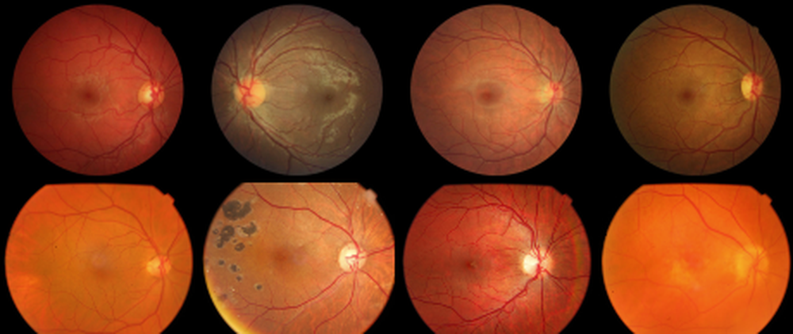

Age Prediction and Categorization from Retinal Fundus Images Using Residual Neural Networks

Abstract
High-accuracy age prediction from retinal images is an important research topic in biometric and clinical analysis, but it is also a challenging task. This paper presents a deep learning-based study to predict the age of individuals and automatically categorize them into different age groups using retinal fundus images. Within the scope of the study, a comparative analysis was performed using variants of the Residual Neural Network (ResNet) architecture on an open and recent retinal image dataset. In the experimental studies, five different architectures were tested: ResNet-18, ResNet-34, ResNet-50, ResNet-101, and ResNet-152. Furthermore, various data imbalance mitigation approaches and image preprocessing strategies were employed to improve and optimize model performance. The experimental findings revealed that while ResNet variants did not show significant performance differences, combining the models with appropriate preprocessing methods could lead to a modest improvement in performance. As a result of the performance tests carried out, while promising results were observed in general, the best results were achieved with the ResNet-101 architecture (mean absolute error (MAE) of 5.02) in age prediction and the ResNet-34 architecture (F-measure of 0.7165) in age categorization.